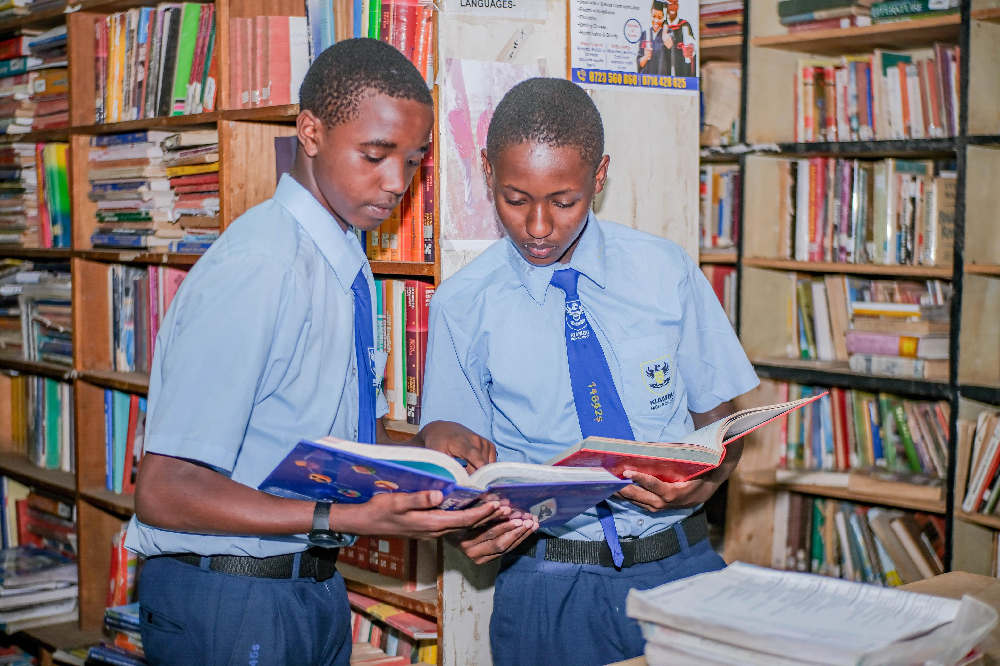
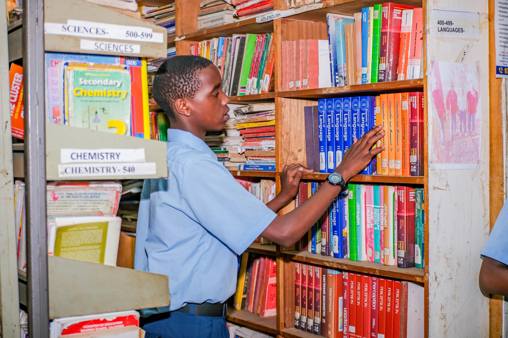

Academic Pathway
Languages, Humanities & Business Studies

Head of Department
M.A. History, B.Ed Arts | 18 Years Experience
Subject Leadership
Dedicated educators shaping well-rounded scholars
English
M.A. English Literature, B.Ed
Kiswahili
B.Ed Kiswahili, M.A. African Languages
History & Government
B.A. History, PGDE
Geography
B.Ed Geography, GIS Certified
Business Studies
MBA, B.Ed Commerce
CRE
B.Th., B.Ed, M.Div
Kenya CBC Curriculum
Building communicators, thinkers, and future leaders
Grammar, comprehension, creative writing, literary analysis, oral skills, poetry & drama
Sarufi, ufahamu, insha, fasihi simulizi, riwaya, ushairi, tamthilia
Conversational French, grammar, French culture, DELF preparation
Kenyan history, African civilizations, world history, constitution, governance systems
Physical geography, human geography, environmental studies, GIS basics, fieldwork
Biblical studies, ethics & morality, African Christianity, contemporary issues
Entrepreneurship, marketing, management, accounting basics, business law
Microeconomics, macroeconomics, development economics, international trade
Personal finance, budgeting, savings, investments, banking
Decision making, critical thinking, self-awareness, interpersonal skills
National values, social responsibility, human rights, peace & conflict resolution
Practical engagement with local communities, project-based learning
Social Sciences students develop strong communication, analytical, and research skills. The pathway prepares students for careers in law, journalism, diplomacy, business, education, and public service through project-based learning and competency assessments.
Learning in Action





Discover all academic pathways available at Kiambu High School